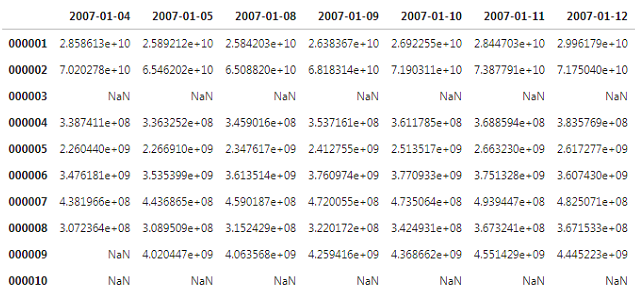

这里设计的因子数据格式，可以同时将结构化的因子矩阵和非结构化的如回测结果、回测参数、因子原代码、因子来源、因子类型、因子作者之类的数据，完整保存于同一文件内，方便同一调用、读取、重现；
并且能对多个因子的数据进行结构化的展示，方便读取观看并重现。
因子数据保存
- 计算因子矩阵示例
计算原始因子值，生成原始因子矩阵
amount = mf.read_hdf5_base('amount_ftp')
amount = amount.T.rolling(20).apply(np.mean).T
- 回测并生成回测数据
对因子回测并保留回测数据
h = mf.run(amount,period=1,fees = 0)
持仓周期： 1
仓位数： 100
回测部分：
回测仓位数： 100
回测手续费： 0
交易模式： t日收盘价买入，收盘价卖出


| 指数收益 | 超额收益 | 策略收益 | |
|---|---|---|---|
| 夏普率 | 0.436 | 3.756 | 1.452 |
| 年化收益率 | 0.133 | 0.311 | 0.478 |
| 年化波动率 | 0.305 | 0.083 | 0.329 |
| 收益回撤比 | 0.117 | 1.194 | 0.628 |
| 最大回撤 | -1.136 | -0.261 | -0.761 |
| 盈亏比 | 0.801 | 1.230 | 0.810 |
| 胜率 | 0.574 | 0.642 | 0.617 |
- 因子计算源代码
将因子计算代码字符化以备保存
code = '''
amount = mf.read_hdf5_base('amount_ftp')
amount = amount.T.rolling(10).apply(np.mean).T'''
- 保存因子
最后对因子矩阵、回测结果、相关信息与参数进行保存。
df = hdf5(amount,backtest=h[0],code = code)
df.save('amount_10',describes='成交金额十日均值',source='东方证券',types='技术面因子',author='yls')
.//data//amount_10.hdf5
<HDF5 file "amount_10.hdf5" (mode r+)> .//data//amount_10.hdf5
ok <HDF5 file "amount_10.hdf5" (mode r+)>
因子基础信息
- 读取因子值
'''读取数据'''
PB = mf.read_hdf5_base('PB')
PB.head()

names = ['amount_20','amount_10','adjust_ll','PB','roe']
mfh5.fetch_base_infos(names)
| 名称 | 简介 | 类型 | 来源 | 作者 | |
|---|---|---|---|---|---|
| 0 | amount_20 | 成交金额二十日均值 | 技术面因子 | 东方证券 | yls |
| 1 | amount_10 | 成交金额十日均值 | 技术面因子 | 东方证券 | yls |
| 2 | adjust_ll | 流通市值调整流通换手 | 技术面因子 | 东方证券 | ws |
| 3 | PB | 市净率，wind数据计算 | 基本面因子 | ws | |
| 4 | roe | 净资产收益率，ttm，wind数据计算 | 基本面因子 | ws |
因子回测结果
同时提取目录下多个因子的回测绩效表现、因子收益率曲线和回测参数设置等信息。
- 绩效数据
mfh5.fetch_performance(names)
| 夏普率 | 年化收益率 | 年化波动率 | 收益回撤比 | 最大回撤 | 盈亏比 | 胜率 | |
|---|---|---|---|---|---|---|---|
| amount_20 | 4.335 | 0.362 | 0.083 | 1.484 | -0.244 | 1.240 | 0.664 |
| amount_10 | 3.756 | 0.311 | 0.083 | 1.194 | -0.261 | 1.230 | 0.642 |
| adjust_ll | 2.322 | 0.163 | 0.070 | 0.697 | -0.234 | 1.102 | 0.586 |
| PB | 0.458 | 0.051 | 0.111 | 0.146 | -0.347 | 1.150 | 0.486 |
| roe | -0.238 | -0.019 | 0.078 | -0.030 | -0.617 | 1.146 | 0.455 |
- 收益曲线
rets = mfh5.fetch_return_series(names).dropna()
rets.plot()
plt.show()

- 回测参数
mfh5.fetch_parames(names)
| 成本 | 换仓周期 | 持股数 | 方向 | 基准 | |
|---|---|---|---|---|---|
| amount_20 | 0 | 1 | 100 | True | all |
| amount_10 | 0 | 1 | 100 | True | all |
| adjust_ll | 0.002 | 10 | 100 | True | all |
| PB | 0.0 | 20 | 100 | True | all |
| roe | 0.0 | 20 | 100 | True | all |
因子计算代码
打印因子计算函数。
code = mfh5.fetch_raw_code('amount_10')
'''
amount = mf.read_hdf5_base('amount_ftp')
amount = amount.T.rolling(10).apply(np.mean).T
'''